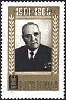
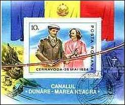
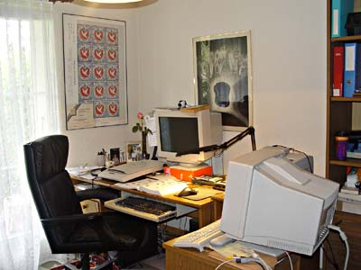

About the Author of This Site

At the EFIRO 2008 World Philatelic Exhibition in Bucharest, Romania, I represented the Philatelic Webmasters Organization (PWO). In the exhibition’s main entrance hall, I presented a display introducing visitors to websites devoted to Romanian philately and Romanian themes on the web. The photograph shows me with three charming representatives of the exhibition’s public-relations team.
They that can give up essential liberty to obtain a little temporary safety
deserve neither liberty nor safety.
Benjamin Franklin, 1759.
A few words about Victor Manta, the author of this site. I was born at the end of the WWII in USSR, at the Ural mountains. Then I lived in several villages in Bukovina, a former Romanian territory that became a part of the Ukrainian Soviet Republic after the WWII. In 1956 my parents decided to quit the USSR and moved to the then communist Romania. I lived in Bucharest until 1983.


It was the reality of life under the dictators Gheorghe Gheorghiu-Dej and Ceausescu (both shown above, on stamps) that opened my eyes about what was actually happening around me. After a hard, long and dangerous fight with the Romanian authorities, I was finally permitted to emigrate, and I established myself, with my family, in the free Switzerland. Here I got access to as much information as I could process, and I was profoundly influenced by Solzhenitsyn's "Gulag Archipelago", and then by the works of Ayn Rand, Frederic Bastiat, Arthur Koestler, Ludwig von Mises, Jean-François Revel, to cite just some of them. Thanks to them and to many others, this site isn't influenced just by what I experienced over 20 years ago inside the Communist regimes, but to my deep philosophical beliefs about freedom, that I have built up thanks to these and other thinkers, Writers and poets.

I have studied electronics, physics and computer programming; I hold a master's degree in physics and a diploma as a computer system engineer. I have worked in Romania and then Switzerland, as a meteorologist, physicist, electronic engineer, researcher, IT specialist and technical director of a Swiss company. Presently I'm retired.
My reading about Communism was facilitated by my knowledge of several languages, three of them belonging to those spoken in the former Soviet empire: Russian, German and Romanian. I had the privilege to read the works of Ayn Rand and Frederic Bastiat in the original languages in which they were written.
For over 45 years I have collected stamps, mainly those related to arts. My Arts on Stamps site (which hosts a stamp collectors club with over 800 members from 85 countries, and a large free art on stamps database), as well as Romanian Stamps site, were internationally awarded, among others by the International Philatelic Association (FIP). I am the founder and the current president of Philatelic Webmasters Organization (PWO), counting at this time over 350 members. On behalf of the PWO, I organized one of the events at the World Philatelic Exhibition EFIRO 2008. See below a picture from this exhibition:
I was member of the Romanian and Swiss philatelic associations. Some stamps of my youth, as well as some humor related to stamp collecting, can be found on the site dedicated to Spanish Africa. My other hobbies are reading, listening to music, and digital photography. Sometimes I "design" my own stamps, like in the example shown below. The nice girl accompanying me on these old pictures is my dear daughter.
I will extend as much as possible this site, which I consider the most important of all those I have created during the last years. It will probably also be the last bigger one, and in a certain sense "the swan song of my philatelic webmaster's soul".
Link on this site: Securitate, philately and me
Published: 07/27/03. Revised: 12/23/2023.
Copyright © 2003 - 2023 by Victor Manta, Switzerland.
All rights reserved worldwide.